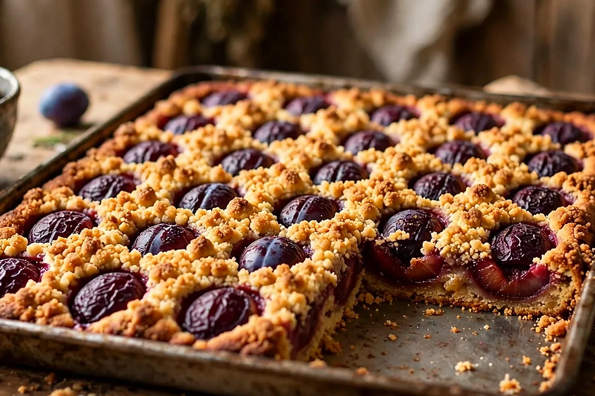

Zwetschgenkuchen vom Blech – mit Streuseln und Hefeteig
Wenn die Zwetschgen reif sind, gibt es bei uns kein Halten mehr: Dann wandert ein ganzes Blech Zwetschgenkuchen in den Ofen. Lockerer Hefeteig, saftige Früchte und knusprige Streusel – am besten noch lauwarm mit einem Klecks Sahne.

Inhaltsverzeichnis
Zutaten
Zubereitung
- Für den Hefeteig das Mehl in eine Schüssel geben und eine Mulde formen. Die Hefe mit der lauwarmen Milch und 1 TL Zucker verrühren, in die Mulde gießen und 10 Minuten gehen lassen.
- Restlichen Zucker, Butter, Ei und Salz dazugeben und alles 8–10 Minuten zu einem glatten, elastischen Teig kneten. Zugedeckt an einem warmen Ort 1 Stunde gehen lassen, bis sich das Volumen verdoppelt hat.
- Inzwischen die Zwetschgen waschen, halbieren und entsteinen. Die Hälften an der Spitze leicht einschneiden, damit sie sich schön auffächern.
- Für die Streusel Mehl, Butter, Zucker, Vanillezucker und Zimt mit den Händen zu Streuseln verreiben und kalt stellen.
- Den Teig auf einem gefetteten oder mit Backpapier belegten Blech (ca. 30 × 40 cm) ausrollen und einen kleinen Rand hochziehen. Mit Paniermehl bestreuen.
- Die Zwetschgen dachziegelartig dicht an dicht mit der Schnittfläche nach oben auf den Teig legen und die Streusel gleichmäßig darüber verteilen.
- Im vorgeheizten Ofen bei 180 °C Ober-/Unterhitze 30–35 Minuten backen, bis die Streusel goldgelb sind.
- Den Kuchen auf dem Blech abkühlen lassen, in Stücke schneiden und nach Belieben mit Schlagsahne servieren.

Tipp
Das Paniermehl unter den Früchten saugt den Saft auf, damit der Boden nicht durchweicht. Sehr saftige Zwetschgen zusätzlich mit 1 EL Zucker bestreuen.
📌 Mehr Rezept-Ideen findest du auf unserem Pinterest-Profil:
Lecker Rezepte auf Pinterest
Lecker Rezepte auf Pinterest